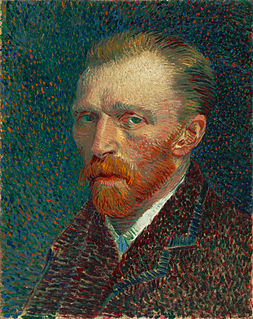

Vincent Willem van Gogh
(1853 ~ 1890)
1882.7.21
인물화나 풍경화에서 내가 표현하고 싶은 것은
감상적으로 우울한 것이 아니라 뿌리 깊은 고뇌다.
내 그림을 본 사람들이 이 화가는 깊이 고뇌하고 있다고,
정말 격렬하게 고뇌하고 있다고 말할 정도의 경지에 이르고 싶다.
1882.7.xx
화가의 의무는 자연에 몰두하고 온 힘을 다해서 자신의 감정을 작품 속에 쏟아붓는 것이다.
그래야 다른 사람도 이해할 수 있는 그림이 된다.
만일 팔기 위해 그림을 그린다면 그런 목적에 도달할 수 없다.
그건 예술을 사랑하는 사람들의 눈을 속이는 행위을 뿐이다.
진정한 예술가는 결코 그런 짓을 하지 않는다.
진지하게 작업을 해 나가면 언젠가는 사람들의 공감을 얻게 된다.